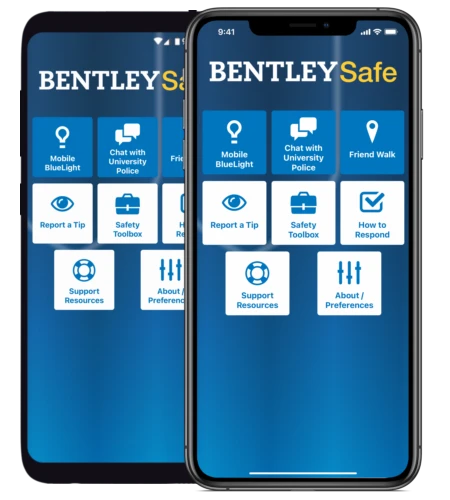
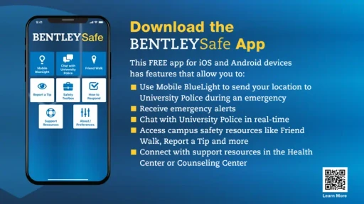
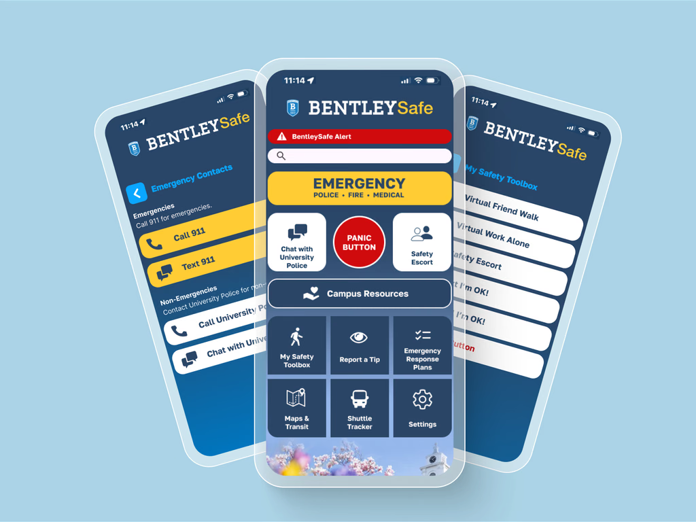
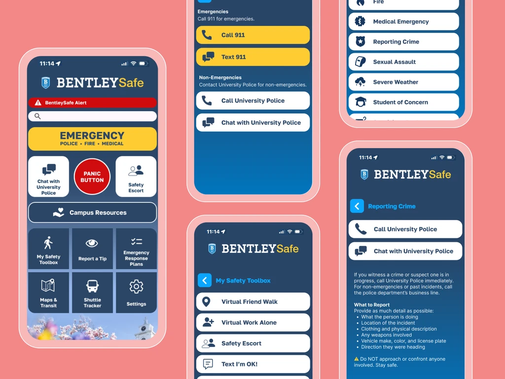
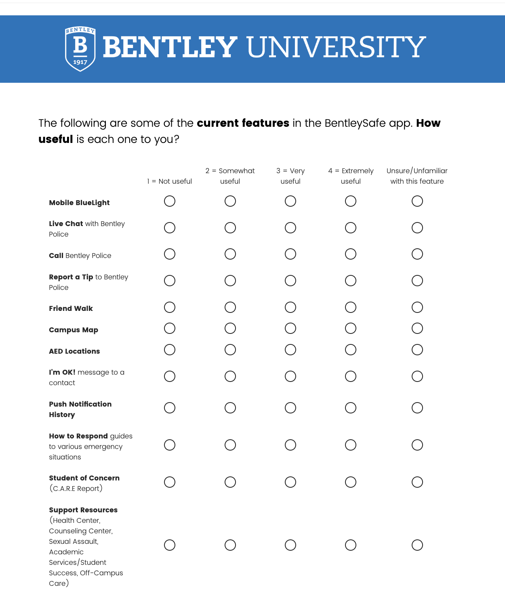
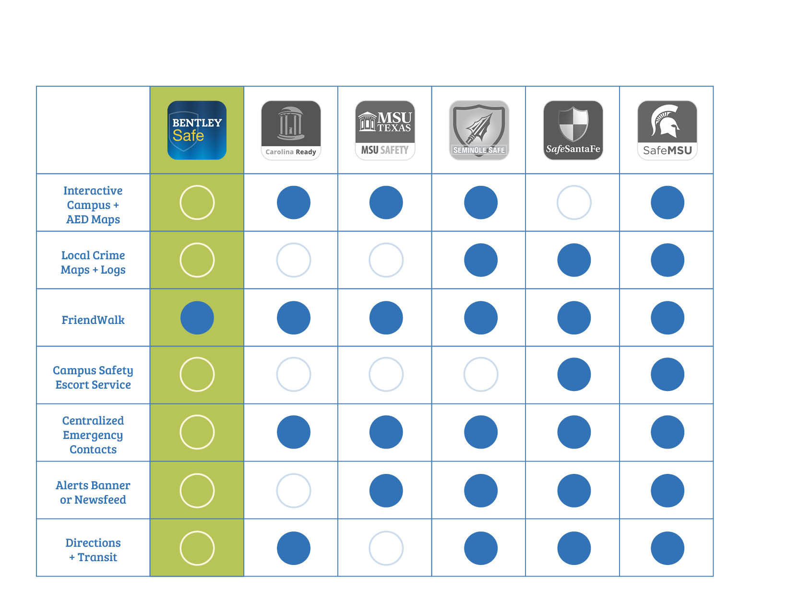

WHAT WE INHERITED
Original BentleySafe experience


Using campus research and human factors to rethink the BentleySafe experience—prioritizing emergency access, clarifying navigation, and making essential resources easier to recognize.
BentleySafe brought emergency contacts, a mobile BlueLight function, safety resources, and reporting tools into one app. Yet its home screen gave many functions similar visual weight. The challenge wasn't a lack of features. It was whether someone could recognize the right action at the right moment.
Our four-person team evaluated the experience through the lenses of human factors and information architecture, while accounting for the AppArmor platform's constraints. We explored how to make urgent actions unmistakable without burying tools that students might use every day.
If a student opens the app when something feels wrong, what should they see first?
?
The original app already offered useful safety resources, but many features carried equal visual weight. Our redesign direction focused on surfacing urgent actions first, grouping related tools, and making the experience easier to scan.




A stronger visual hierarchy helps users identify the most urgent actions immediately.
Related features were grouped into the “My Safety Toolbox” so they felt easier to locate and understand.
Labels and groupings were reworked to reduce interpretation and make the app easier to scan in stressful moments.
Our approach brought together a campus survey, a comparative review of other university safety apps, and a heuristic evaluation. The methods offered complementary perspectives: which features students considered useful, how peer apps organized similar services, and where BentleySafe's interface created unnecessary uncertainty.
Explore students' perceptions of existing features, including mobile BlueLight, live chat, emergency calling, and support resources.
Compare safety features across university apps, including emergency contacts, alerts, maps, and supporting services.
Evaluate navigation labels, feature grouping, visibility, and the discoverability of time-sensitive actions.


The artifacts shown above document the feature-usefulness survey and competitive review. Findings are presented qualitatively here; we did not measure a post-redesign usability improvement.
Instead of leaving research as a list of usability problems, we translated it into three related design priorities. Each responds to something that made the existing experience harder to interpret.
Emergency access appeared alongside routine features, making it harder for the interface to signal what mattered first.
Give emergency actions a prominent entry point and consolidate key contact options such as calling and texting emergency services.
Feature names did not always explain what someone could accomplish by selecting them.
Use clearer, more action-oriented labels so destinations are predictable before users tap.
Related tools were distributed across the interface instead of being easy to scan as a group.
Organize routine safety tools—including Friend Walk and safety escort—under a recognizable “My Safety Toolbox” grouping.
A simplified illustration of the proposed information-architecture decisions—not a screenshot, tested prototype, or exact reproduction of the delivered UI.
Urgent actions and contacts
Supporting safety features
As the UX/UI researcher, designer, and project lead within a four-person team, I helped connect what we learned to the recommendations and proposed interface.
Brought together survey, comparative, and heuristic perspectives to identify common themes.
Helped prioritize improvements to emergency visibility, feature labeling, and navigation.
Connected those findings to information architecture and screen concepts within the existing platform's constraints.
Our team delivered a redesigned BentleySafe interface concept and recommendations focused on making emergency options more visible, navigation more predictable, and related resources easier to locate. The work connected research observations with concrete design decisions.
The outcome was a proposed redesign, not a documented university launch. We did not measure post-redesign task performance or emergency outcomes; usability testing would be needed to validate those impacts.
When the stakes are high, finding help shouldn't require detective work. Clarity is part of the service.